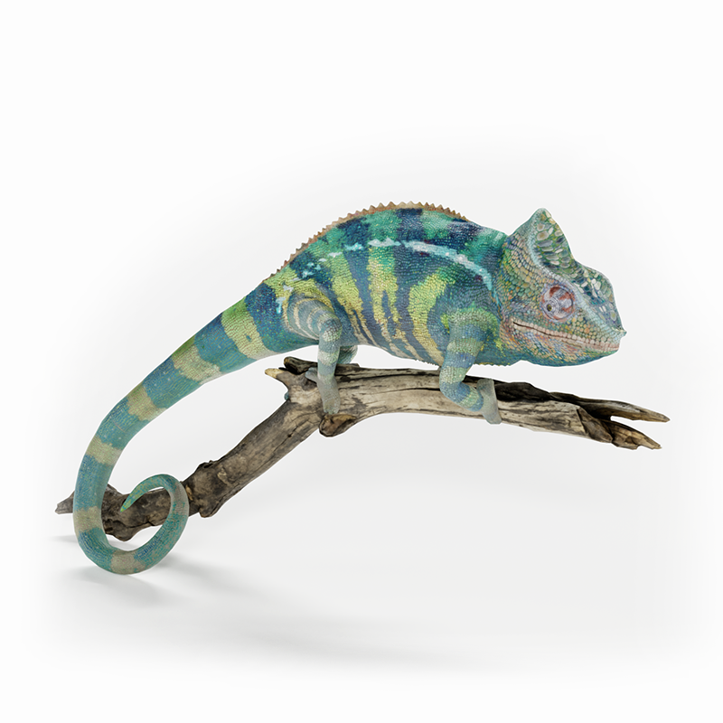

Ouvrez cette page sur Safari visionOS, pincez l'objet et tirez-le hors de la fenêtre !
Vous pouvez tourner l'objet ici, ou le drag-and-drop dans votre espace.
Modèle avec plusieurs teintes (variantes de matériaux) et animation. AR : glissez l’aperçu hors de la fenêtre sur visionOS.

Le GLB est introuvable ou invalide. Utilisez le lien image ci-dessus pour l’AR en USDZ, ou ajoutez le fichier GLB exporté.